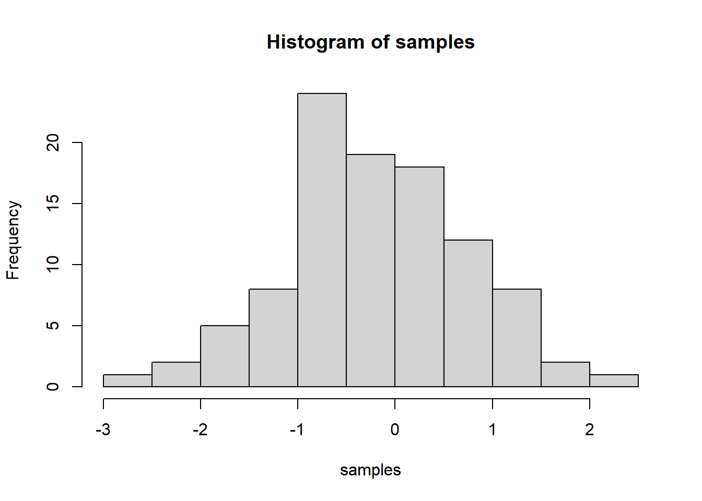

IMPORTANT: You can delete everything in here and start fresh. You might want to start by not deleting anything above this line until you know what that stuff is doing.
This is an .Rmd file. It is plain text with special features. Any time you write just like this, it will be compiled to normal text in the website. If you put a # in front of your text, it will create a top level-header.
2018 | 7 | 23 Last compiled: 2019-01-28
Notice that whatever you define as a top level header, automatically gets put into the table of contents bar on the left.
You can add more headers by adding more hashtags. These won’t be put into the table of contents
Here’s an even lower level header
2018 | 7 | 23 Last compiled: 2019-01-28
I’m writing this tutorial going from the top down. And, this is how it will be printed. So, notice the second post is second in the list. If you want your most recent post to be at the top, then make a new post starting at the top. If you want the oldest first, do, then keep adding to the bottom
So far this is just a blog where you can write in plain text and serve your writing to a webpage. One of the main purposes of this lab journal is to record your progress learning R. The reason I am asking you to use this process is because you can both make a website, and a lab journal, and learn R all in R-studio. This makes everything really convenient and in the sam place.
So, let’s say you are learning how to make a histogram in R. For example, maybe you want to sample 100 numbers from a normal distribution with mean = 0, and standard deviation =1, and then you want to plot a histogram. You can do this right here by using an r code block, like this:
samples <- rnorm(100, mean=0, sd=1)
hist(samples)
When you knit this R Markdown document, you will see that the histogram is printed to the page, along with the R code. This document can be set up to hide the R code in the webpage, just delete the comment (hashtag), from the cold folding option in the yaml header up top. For purposes of letting yourself see the code, and me see the code, best to keep it the way that it is. You learn all of these things and more can be customized in each R code block.
Use this lab journal to record what you do in R. This way I will be able to see what you are doing and help you along the way. You will also be creating a repository of all the things you do. You can make posts about everything. Learning specific things in R (project unrelated), and doing things for the project that we will discuss at the beginning of the Fall semester. You can get started now by fiddling around with googling things, and trying stuff out in R. I’ve placed some helpful starting links in the links page on this website
It’s hard to learn programming when you don’t have specific problems that you are trying to solve. Everything just seems abstract.
I wrote an introductory programming book that introduces R, and gives some concrete problems for you to solve.
To get the hang of journaling and solving the problems to learn programming, my suggestion is that you use this .Rmd file to solve the problems. It would look like this:
Do simple math with numbers, addition, subtraction, multiplication, division
1+2## [1] 32*5## [1] 105/3## [1] 1.666667(1+6+4)/5## [1] 2.2Put numbers into variables, do simple math on the variables
a<-1
b<-2
a+b## [1] 3d<-c(1,2,3)
e<-c(5,6,7)
d+e## [1] 6 8 10d*e## [1] 5 12 21d/e## [1] 0.2000000 0.3333333 0.4285714Write code that will place the numbers 1 to 100 separately into a variable using for loop. Then, again using the seq function.
# for loop solution
# i becomes the number 1 to 100 at each step of the loop
a <- length(100) # make empty variable, set length to 100
for (i in 1:100){
a[i] <-i #assigns the number in i, to the ith index of a
}
print(a)## [1] 1 2 3 4 5 6 7 8 9 10 11 12 13 14 15 16 17
## [18] 18 19 20 21 22 23 24 25 26 27 28 29 30 31 32 33 34
## [35] 35 36 37 38 39 40 41 42 43 44 45 46 47 48 49 50 51
## [52] 52 53 54 55 56 57 58 59 60 61 62 63 64 65 66 67 68
## [69] 69 70 71 72 73 74 75 76 77 78 79 80 81 82 83 84 85
## [86] 86 87 88 89 90 91 92 93 94 95 96 97 98 99 100# for loop solution #2
a<-c() #create empty variable using combine command
for (i in 1:100){
a<-c(a,i) # keeps combining a with itself and the new number in i
}
print(a)## [1] 1 2 3 4 5 6 7 8 9 10 11 12 13 14 15 16 17
## [18] 18 19 20 21 22 23 24 25 26 27 28 29 30 31 32 33 34
## [35] 35 36 37 38 39 40 41 42 43 44 45 46 47 48 49 50 51
## [52] 52 53 54 55 56 57 58 59 60 61 62 63 64 65 66 67 68
## [69] 69 70 71 72 73 74 75 76 77 78 79 80 81 82 83 84 85
## [86] 86 87 88 89 90 91 92 93 94 95 96 97 98 99 100# seq solution
a <- seq(1,100,1) # look up help for seq using ?seq() in console
print(a)## [1] 1 2 3 4 5 6 7 8 9 10 11 12 13 14 15 16 17
## [18] 18 19 20 21 22 23 24 25 26 27 28 29 30 31 32 33 34
## [35] 35 36 37 38 39 40 41 42 43 44 45 46 47 48 49 50 51
## [52] 52 53 54 55 56 57 58 59 60 61 62 63 64 65 66 67 68
## [69] 69 70 71 72 73 74 75 76 77 78 79 80 81 82 83 84 85
## [86] 86 87 88 89 90 91 92 93 94 95 96 97 98 99 100And keep going. Try to solve the problems with different scripts that provide the same solution. Good luck, Happy coding.